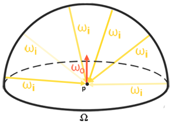
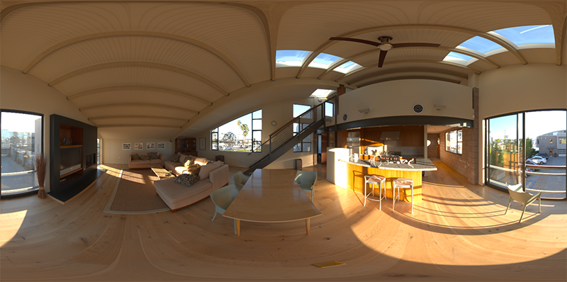
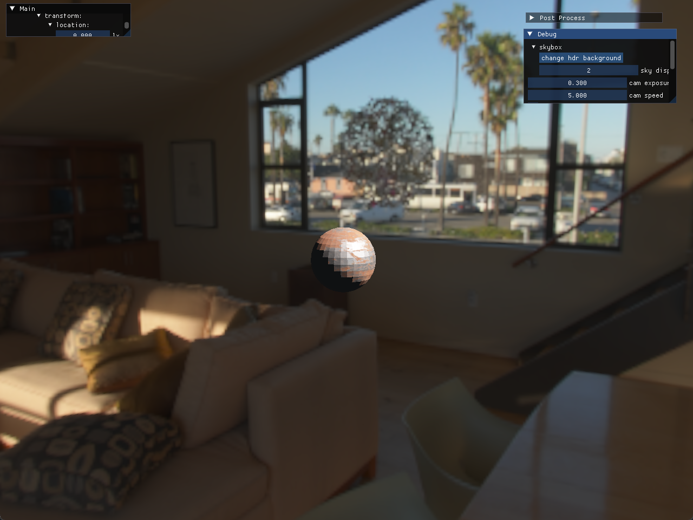
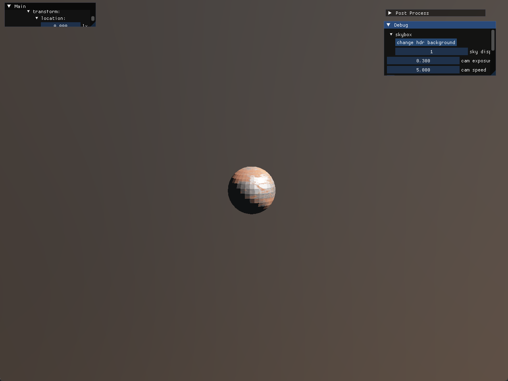
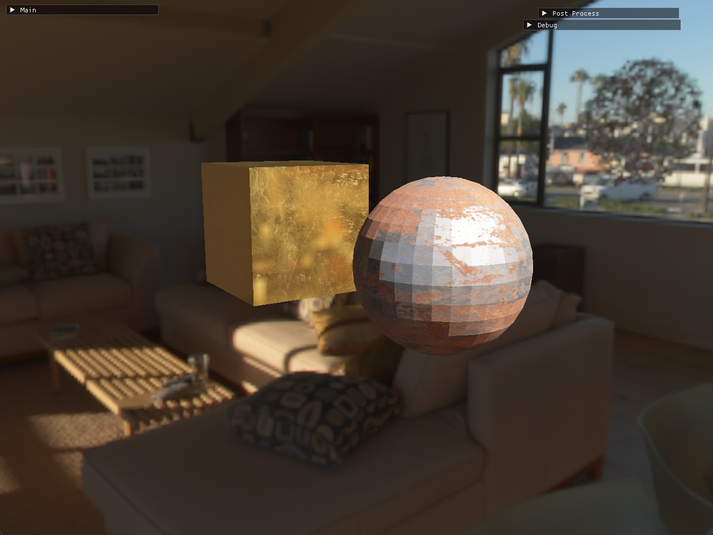

前言
KongEngine 的Vulkan接入还在进行中。好消息是已经能够实现一个基本的Vulkan渲染流程，将简单的带有贴图模型渲染到场景中了；坏消息是，这就是他目前利用Vulkan能做到的所有事了。
其实按照目前的进展，是可以准备一篇文章来讲讲接入Vulkan这段时间的一些内容了。不过思来想去，还是计划延后，等更加完善了再来详细说说。为了尽量实现我一周一篇文章的计划，也想填填以前的坑，今天这篇文章打算讲讲基于图像的光照技术：IBL 。
什么是IBL
IBL 即Image-Based Lighting ，是基于物理的渲染（PBR）中一种重要的光照技术。传统的光照计算通常是基于光源的，例如点光源、方向光等，这些光源模型比较简单，难以模拟出复杂的真实世界光照环境。而 IBL 则是利用环境图像（通常是高动态范围图像，HDR）来捕捉场景周围的光照信息，将其作为场景中物体的光照来源，从而为物体提供更真实、更自然的光照效果。
IBL 的核心思想是将环境光照视为无数个微小的光源，这些光源分布在物体周围的各个方向上。通过对环境图像进行采样和处理，可以计算出物体表面从各个方向接收到的光线能量，进而模拟出物体在复杂光照环境下的外观 。
IBL的理论基础
在之前的光照计算中我们主要是计算点光源和方向光源的辐照度，这个十分简单，因为我们能够事先知道对辐照度有贡献的光的方向。而IBL中的光源是来自四面八方的，环境的每个方向都有可能对最终的辐照度有一定的影响，和我们之前所面对的问题是不一样的，因此我们需要换一个思路。
那么为了实现IBL的效果，我们需要解决两个必要的条件：
我们需要想办法获取场景中任意方向的辐照度贡献。
要快，性能要在能接受的范围之内。
漫反射辐照度
我们来回顾一下PBR的反射方程。
$$
可以看出PBR的漫反射部分和镜面反射部分是独立的，所以可以将积分拆分成如下两个部分：
这篇文章我们主要关注的是漫反射部分，也就是公式的前一个部分.将常数项移除出积分后，我们得到下面的公式：
$$L_o(p, \omega_o) = \frac{k_d c}{\pi} \int_{\Omega} L_i(p, \omega_i) \mathbf{n} \cdot \omega_i , d\omega_i$$
上述公式表示的是一个是依赖于 $\omega_i$的积分。
预计算辐照度贴图
根据环境贴图，获取$\omega_i$方向上的辐照度的方法非常简单，如下：
1 vec3 radiance = texture (cubemap, w_i).rgb;
而有上面的公式可知,漫反射辐照度是一个依赖于$\omega_i$的积分，那么我们可以想到通过对环境贴图进行预处理，让它在每个采样方向中存储漫反射积分的结果，这样就能实时的在场景中获取IBL的漫反射辐照度了。
预计算的核心在于对环境贴图进行卷积处理 ，生成一张新的纹理，也就是辐照度贴图（Irradiance Map）。这个过程我们会在渲染前完成的，性能更佳的方式是离线完成，不需要在每帧渲染时重复计算。在实际渲染时，只需从辐照度贴图中采样就能快速获取物体表面的漫反射辐照度，从而大大提高渲染效率。

IBL的实现
好了，其实理论非常简单，接下来是实际的实现部分。以下的代码都已经整合到KongEngine的OpenGL渲染的流程中。
我们使用stb_image 库来加载图像，它能够支持HDR格式的图片。一般来说，HDR环境贴图是存储在一张等距柱状投影图(Equirectangular Map)中，我们可以直接使用等距柱状投影图来获取环境信息，但是这相对来说还是比较昂贵的，所以一般会先将等距柱状投影图转换为立方体贴图。

等距柱状投影图转换为立方体贴图
好了，下面就是实际的代码展示。
1 2 3 4 5 6 7 8 9 10 11 12 13 14 15 16 17 18 19 20 21 22 23 24 glGenFramebuffers (1 , &preprocess_fbo);glGenRenderbuffers (1 , &preprocess_rbo);glBindFramebuffer (GL_FRAMEBUFFER, preprocess_fbo);glBindRenderbuffer (GL_RENDERBUFFER, preprocess_rbo);glRenderbufferStorage (GL_RENDERBUFFER, GL_DEPTH_COMPONENT24, CUBE_MAP_RES, CUBE_MAP_RES);glFramebufferRenderbuffer (GL_FRAMEBUFFER, GL_DEPTH_ATTACHMENT, GL_RENDERBUFFER, preprocess_rbo);glGenTextures (1 , &cube_map_id);glBindTexture (GL_TEXTURE_CUBE_MAP, cube_map_id);for (unsigned int i = 0 ; i < 6 ; ++i)glTexImage2D (GL_TEXTURE_CUBE_MAP_POSITIVE_X + i, 0 , GL_RGB16F, 0 , GL_RGB, GL_FLOAT, nullptr );glTexParameteri (GL_TEXTURE_CUBE_MAP, GL_TEXTURE_WRAP_S, GL_CLAMP_TO_EDGE);glTexParameteri (GL_TEXTURE_CUBE_MAP, GL_TEXTURE_WRAP_T, GL_CLAMP_TO_EDGE);glTexParameteri (GL_TEXTURE_CUBE_MAP, GL_TEXTURE_WRAP_R, GL_CLAMP_TO_EDGE);glTexParameteri (GL_TEXTURE_CUBE_MAP, GL_TEXTURE_MIN_FILTER, GL_LINEAR);glTexParameteri (GL_TEXTURE_CUBE_MAP, GL_TEXTURE_MAG_FILTER, GL_LINEAR);
然后我们需要将面向立方体六个面对应的六个方向的视图矩阵准备好，每个投影矩阵的fov设置为90度，这样能够将所有方向都包含进来：
1 2 3 4 5 6 7 8 9 10 11 vec3 (0 );push_back (lookAt (scene_center, scene_center+vec3 (1 ,0 ,0 ), vec3 (0 ,-1 ,0 )));push_back (lookAt (scene_center, scene_center+vec3 (-1 ,0 ,0 ), vec3 (0 ,-1 ,0 )));push_back (lookAt (scene_center, scene_center+vec3 (0 ,1 ,0 ), vec3 (0 ,0 ,1 )));push_back (lookAt (scene_center, scene_center+vec3 (0 ,-1 ,0 ), vec3 (0 ,0 ,-1 )));push_back (lookAt (scene_center, scene_center+vec3 (0 ,0 ,1 ), vec3 (0 ,-1 ,0 )));push_back (lookAt (scene_center, scene_center+vec3 (0 ,0 ,-1 ), vec3 (0 ,-1 ,0 )));perspective (glm::radians (90.0f ), 1.0f , 0.1f , 10.0f );
然后对每个面，我们将对应的投影矩阵传入并做一次draw，输出的结果。
1 2 3 4 5 6 7 8 9 10 11 12 13 14 15 16 17 18 19 Use ();SetInt ("sphere_map" , 0 );SetMat4 ("projection" , projection);glActiveTexture (GL_TEXTURE0);glBindTexture (GL_TEXTURE_2D, sphere_map_texture);glViewport (0 , 0 , CUBE_MAP_RES, CUBE_MAP_RES); glBindFramebuffer (GL_FRAMEBUFFER, preprocess_fbo);for (unsigned int i = 0 ; i < 6 ; ++i)SetMat4 ("view" , skybox_views[i]);glFramebufferTexture2D (GL_FRAMEBUFFER, GL_COLOR_ATTACHMENT0, 0 );glClear (GL_COLOR_BUFFER_BIT | GL_DEPTH_BUFFER_BIT);Draw ();
对应的shader如下：
vert:
1 2 3 4 5 6 7 8 9 10 11 12 13 #version 450 compatibility layout (location = 0 ) in vec3 aPos;out vec3 WorldPos;uniform mat4 projection;uniform mat4 view;void main()gl_Position = projection * view * vec4 (WorldPos, 1.0 );
fragment
1 2 3 4 5 6 7 8 9 10 11 12 13 14 15 16 17 18 19 20 21 22 #version 450 compatibility out vec4 FragColor;in vec3 WorldPos;uniform sampler2D sphere_map;const vec2 invAtan = vec2 (0.1591 , 0.3183 );vec2 SampleSphericalMap(vec3 v)vec2 uv = vec2 (atan (v.z, v.x), asin (v.y));0.5 ;return uv;void main()vec2 uv = SampleSphericalMap(normalize (WorldPos));vec3 color = texture (sphere_map, uv).rgb;vec4 (color, 1.0 );
在片段着色器中，我们将一个球面环境纹理（通常是一个全景图）映射到一个三维场景中的物体表面。具体来说，它根据物体表面上每个片段的世界空间位置，计算出对应的球面纹理坐标，这个算法我不在这里深入，有兴趣可以深入了解一下球面坐标与三维空间向量的关系 以及从三维向量到二维纹理坐标的转换 。
好了，经过了上面这些步骤，我们将一张等距柱状投影图转换成了立方体贴图。这个贴图可以按照原有的天空盒渲染流程渲染为天空背景。
当然，这仅仅只是实现IBL漫反射辐照度的第一步。
立方体贴图的卷积
好了，现在我们有了从等距柱状投影图得来的立方体贴图，接下来的部分是重中之重：我们要计算所有方向的间接漫反射的积分。
回到我们之前提到的方法，我们可以通过预处理环境贴图 ，对其进行卷积处理 。
1 2 3 4 5 6 7 8 9 10 11 12 13 14 15 16 17 18 19 20 21 22 23 Use ();SetInt ("cube_map" , 0 );SetMat4 ("projection" , projection);glBindFramebuffer (GL_FRAMEBUFFER, preprocess_fbo);glBindRenderbuffer (GL_RENDERBUFFER, preprocess_rbo);glRenderbufferStorage (GL_RENDERBUFFER, GL_DEPTH_COMPONENT24, 32 , 32 );glActiveTexture (GL_TEXTURE0);glBindTexture (GL_TEXTURE_CUBE_MAP, cube_map_id);glViewport (0 , 0 , 32 , 32 ); for (unsigned int i = 0 ; i < 6 ; ++i)SetMat4 ("view" , skybox_views[i]);glFramebufferTexture2D (GL_FRAMEBUFFER, GL_COLOR_ATTACHMENT0, 0 );glClear (GL_COLOR_BUFFER_BIT | GL_DEPTH_BUFFER_BIT);Draw ();glBindFramebuffer (GL_FRAMEBUFFER, 0 );
如上面的代码所示，我们将转换后的立方体贴图传入到辐照度预计算的shader里面。irradiance_tex_id 是创建的预处理的漫反射辐照度贴图，由于预处理的结果是对原辐照度贴图卷积而来，它丢失了原有贴图的大部分高频细节，因此可以用较低的分辨率来存储，这里使用的是32X32。
接下来是对立方体贴图做卷积处理，卷积的处理方法有很多种，这里采用的是一个方法是将球体表面根据立体角平均划分为多个小区域，对每片区域采样固定数量的结果并取平均值。
1 2 3 4 5 6 7 8 9 10 11 12 13 14 15 16 17 18 19 20 21 22 23 24 25 26 27 28 29 30 31 32 33 34 35 36 37 38 39 #version 330 core out vec4 FragColor;in vec3 WorldPos;uniform samplerCube cube_map;const float PI = 3.14159265359 ;void main()vec3 N = normalize (WorldPos);vec3 irradiance = vec3 (0.0 );vec3 up = vec3 (0.0 , 1.0 , 0.0 );vec3 right = normalize (cross (up, N));normalize (cross (N, right));float sampleDelta = 0.025 ;float nrSamples = 0.0 ;for (float phi = 0.0 ; phi < 2.0 * PI; phi += sampleDelta)for (float theta = 0.0 ; theta < 0.5 * PI; theta += sampleDelta)vec3 tangentSample = vec3 (sin (theta) * cos (phi), sin (theta) * sin (phi), cos (theta));vec3 sampleVec = tangentSample.x * right + tangentSample.y * up + tangentSample.z * N;texture (cube_map, sampleVec).rgb * cos (theta) * sin (theta);1.0 / float (nrSamples));vec4 (irradiance, 1.0 );
上面的shader代码，我们以WorldPos指向的方向为$\omega_o$，采样一个半球范围的辐照度数据。phi=$\phi$对应上图球体坐标的“经度”，范围是0到360度；theta=$\theta$对应着上图球体坐标的“纬度”，范围是0到90度。
在循环中，我们将球面的坐标转换为3D世界坐标，以3D世界坐标作为索引去采样辐照度立方体贴图的数据，并对所有采样结果取平均值。
完成了这个流程后，我们就得到了一个预计算好的辐照度贴图。


应用在PBR算法中
有了预计算好的辐照贴图，我们需要将它应用于PBR的算法中。漫反射辐照度贴图用于表示周边环境中的间接光积累的结果，可以将它应用于环境光的部分：
1 vec3 skybox_irradiance = texture (skybox_diffuse_irradiance_texture, frag_normal).xyz;
我们在之前的公式变换中，将光照拆分为漫反射和镜面反射两个部分。由于漫反射和镜面反射在间接光照中所起的作用不同，我们需要借助菲涅尔方程来确定物体表面的间接反射率，以此来对漫反射部分进行恰当的加权处理，以实现更精准的光照模拟。
1 2 3 4 5 6 7 vec3 FresnelSchlickRoughness(float cosTheta, vec3 F0, float roughness)return F0 + (max (vec3 (1.0 - roughness), F0) - F0) * pow (clamp (1.0 - cosTheta, 0.0 , 1.0 ), 5.0 );
上面这个方法也被用在PBR光照计算中。
1 2 3 4 5 6 F0 = mix (F0, env_albedo.xyz, env_metallic);vec3 kS = FresnelSchlickRoughness(max (dot (frag_normal, view), 0.0 ), F0, env_roughness);vec3 kD = 1.0 - kS;1.0 - env_metallic;vec3 env_diffuse = env_albedo.xyz * skybox_irradiance;
加上漫反射环境贴图后，效果如下面的gif所示。
结语
好了，这部分主要是介绍IBL中漫反射的处理部分，下一篇文章我们会聚焦于IBL镜面反射的部分，实现完整的IBL效果。

参考资料
整个IBL的实现是参照Learn OpenGL上的Diffuse irradiance部分 上的步骤来实现的，讲解的非常详细。中文版 对应的是这一篇文章。